A live project dashboard built from our weekly standup
A project dashboard for our work with a construction industry client, built around the weekly standup I started. It replaced two Slack lists, updates every day from email, meeting transcripts, Slack messages and Google Drive, and nothing saves until a person approves it. It's now the template for future client dashboards, a key feature in Cerino.
To keep client and company information private, the client, team names, tasks and numbers in these screens and the prototype are made up. The process and design decisions come from the actual project.
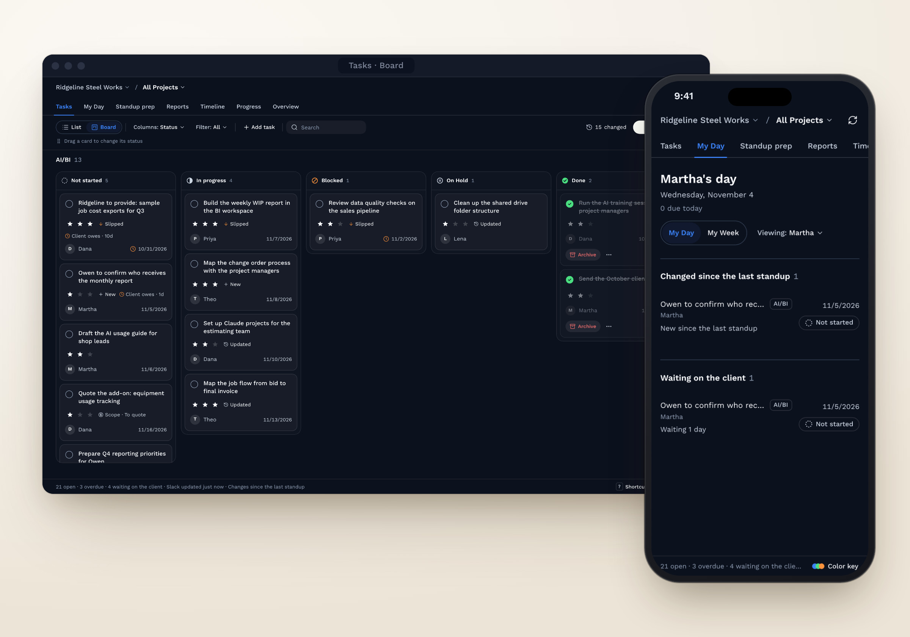
I joined Consciens early, when the startup had no project management set up. When we took on a client in the construction industry, I started tracking that project's tasks in two Slack lists and started our weekly standup meetings.
The lists held the tasks, but decisions lived in meeting notes in Google Drive, and the latest news came in through Slack messages and email. At standup nobody had one place to see what had changed, what was overdue or what the client owed us, so we pieced it together every week.
Stephen, our founder, asked for a dashboard with three requirements. It had to update itself instead of being a static checklist. It had to keep stable client information apart from task status, so people weren't rereading the same facts every week. And it had to match the design system of Cerino, our product.
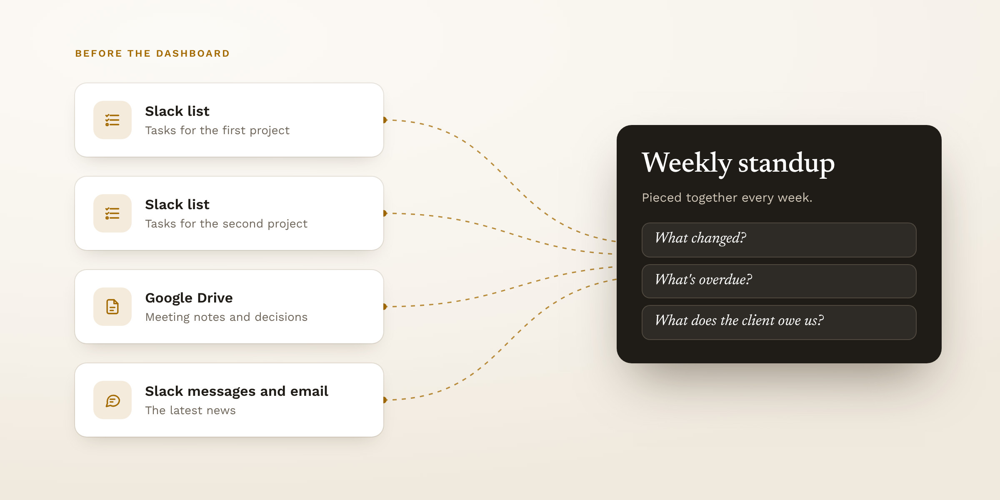
Fig 01. Before: project updates spread across Slack and Google Drive
I designed and built the dashboard in Claude and shared each version with the team early, while it was still easy to change.
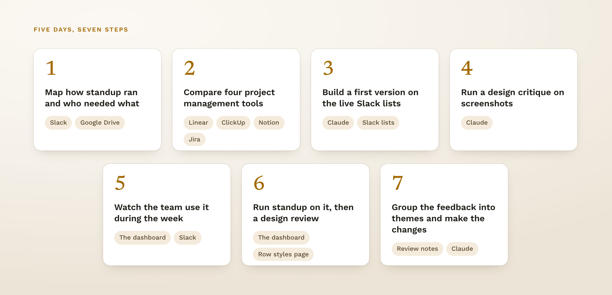
Fig 02. The seven steps, each with the tool I used for it
Before designing screens, I worked out who would use the dashboard and what each person needed from it. Three groups came up, each with a different question.
| Who | Their question | What it became |
|---|---|---|
| The team at standup | What changed, what's overdue and what the client owes us | The Tasks tab, with each task marked New, Updated or Slipped since the last standup |
| Each person during the week | What do I need to do today? | My Day, with a My Week view |
| Stephen, our founder | Where the project stands with the client | The Overview tab for client details and decisions, and the Reports tab for a monthly client report |
I compared Linear, ClickUp, Notion and Jira for how they design dashboards, which features they offer and how they track projects. Monday came up again in the review. Most were built for more than we needed, and a new subscription didn't make sense when we already had our own Claude setup. GitHub became the main reference for the UI, for its dashboards and its restrained use of color.
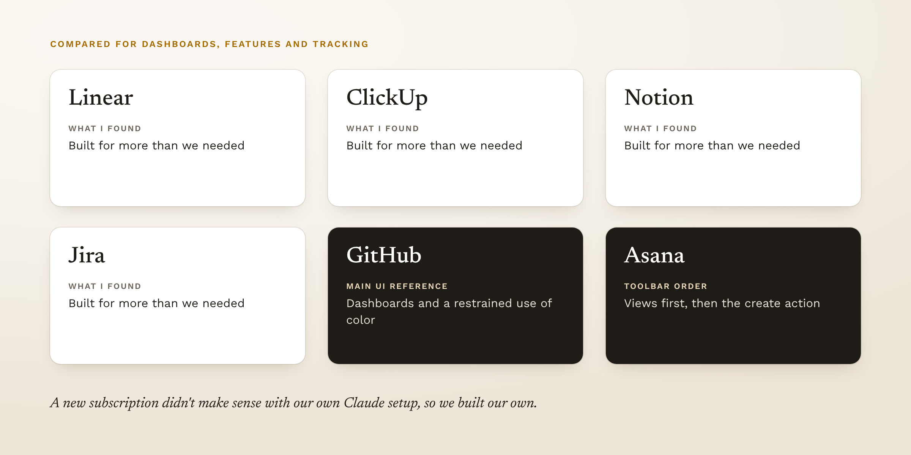
Fig 03. The tools I compared and what I took from each
Before the team saw it, I ran a structured design critique on screenshots of the dashboard. It found four problems. The standup agenda was buried under stale dates, the details panel covered the toolbar, the toolbar competed with the tasks, and on a phone the filters were cramped. I fixed all four.
I set six principles from Stephen's requirements and from what the team already used, and I checked each screen against them.
The Tasks tab shows tasks as a list or a board, and every field edits in place. The stage timeline has its own tab. Standup runs from the same tab. Each task is marked New, Updated or Slipped since the last standup, and Finish standup saves a snapshot that next week's markers start from.
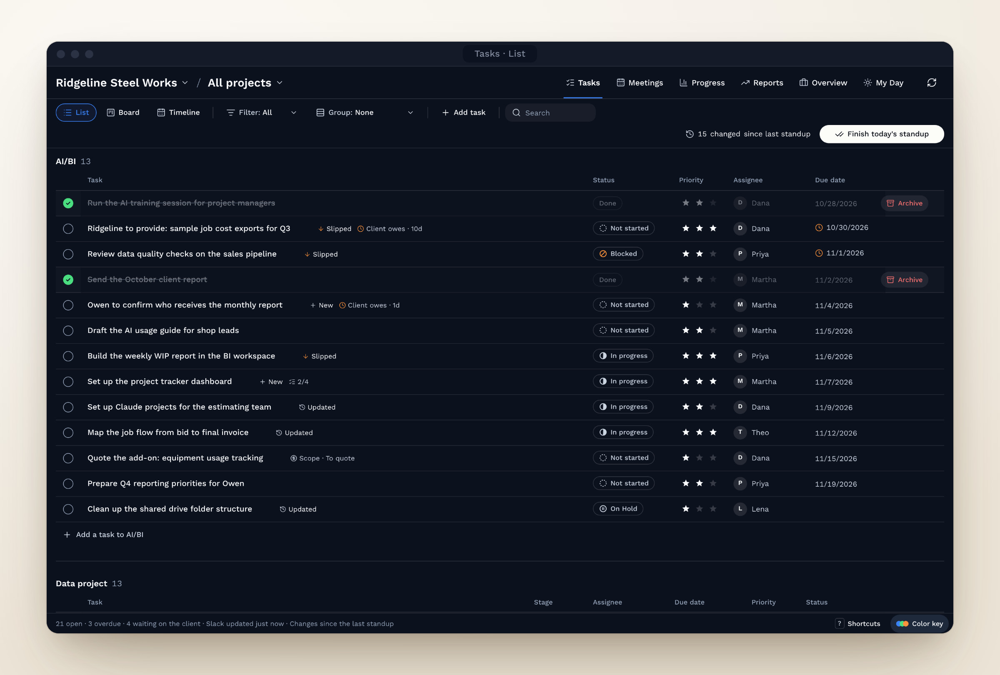
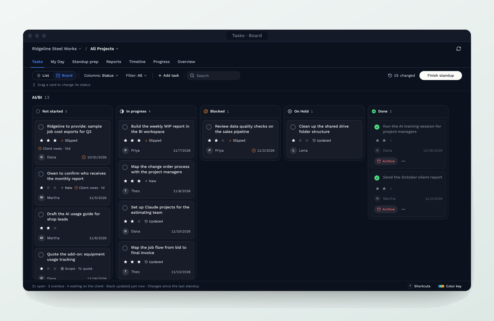
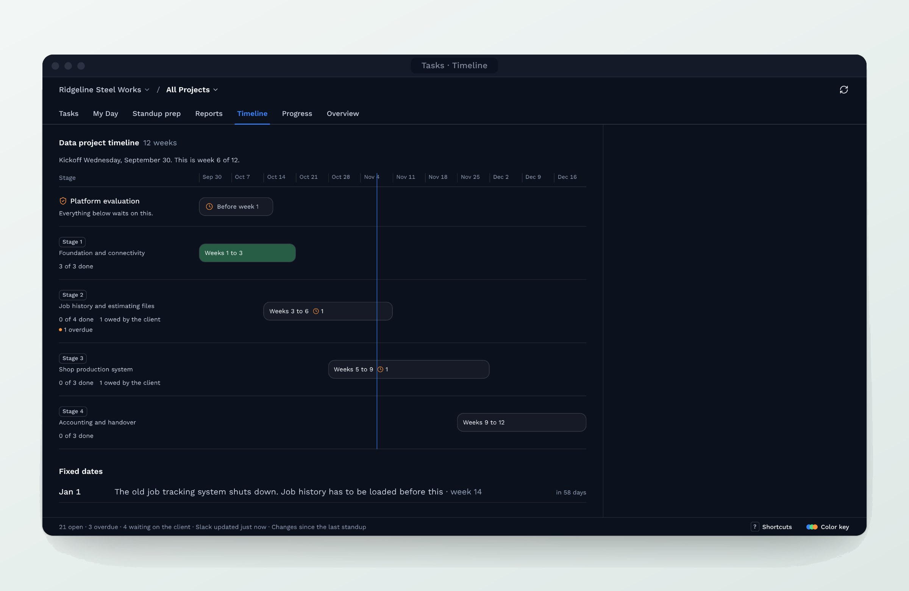
Fig 04. Tasks as a list and a board, and the Timeline tab. Tap the arrows to switch.
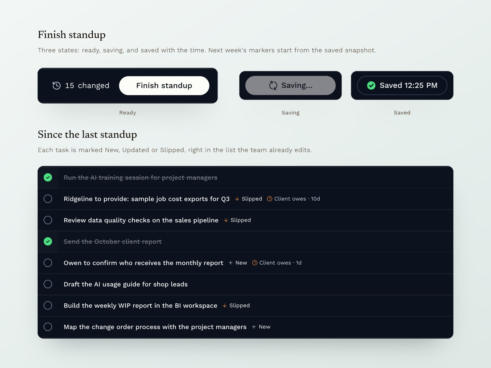
Fig 05. Standup run from the task list
The Standup prep tab pulls meeting transcripts from Google Drive. Claude drafts the summary, decisions and action items, and a person approves them before anything saves.
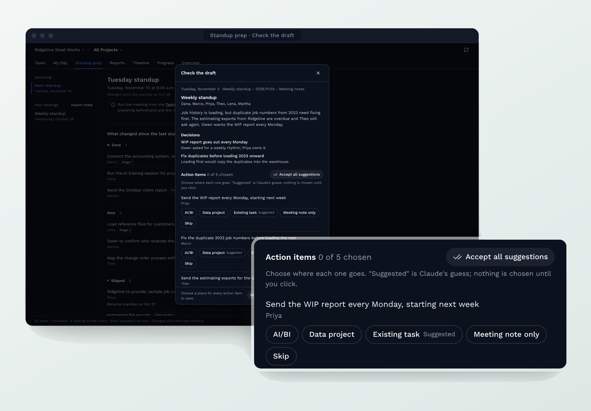
Fig 06. A person approves Claude's draft before anything saves
My Day became the team's favorite feature. It shows each person only their own work for the day: what's overdue, what's due, what's in progress, what changed since the last standup, and what's waiting on the client. Action items approved in Standup prep show up there too, so each person sees what they agreed to without going back through the notes. My Week shows the same view across the whole week, and you can switch the view to see a teammate's day.
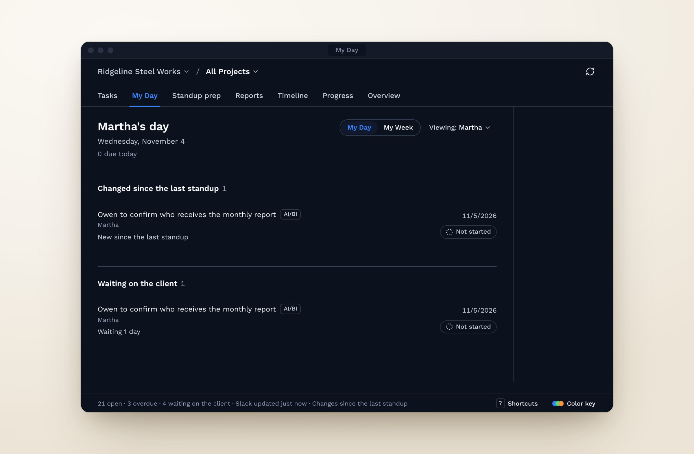
Fig 07. My Day: one person's work for the day
The whole dashboard works on a phone. The Tasks toolbar wraps into three rows, every button is a full 44px tap target, and the Standup prep side list becomes a dropdown.
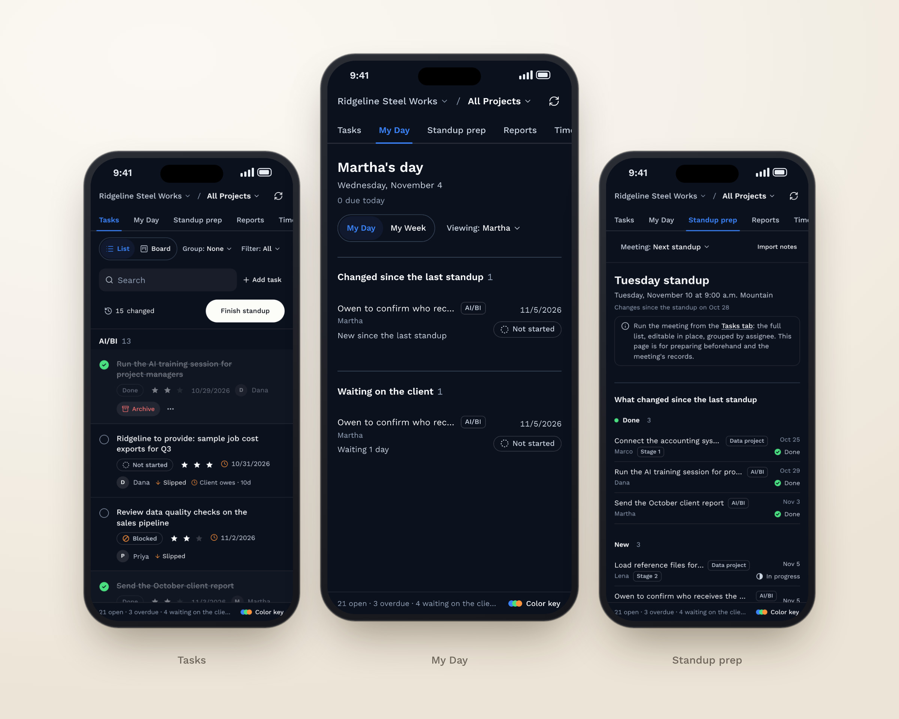
Fig 08. Tasks, My Day and Standup prep on a phone
The team ran standup from the dashboard and added and edited tasks live while we talked. Stephen said the calmer palette lowered his anxiety and made it clear what to pay attention to.
After the trial, I held a design review with the team. I walked through the dashboard live and shared a page with three task row styles side by side, so people could compare the options directly. The team kept the original rows. I grouped the rest of the feedback into four themes and changed the design for each one.
| Theme | What we saw | What changed |
|---|---|---|
| Getting lost between pages | Leaving Tasks dropped the second bar, and I got lost in my own dashboard while presenting it | Tabs on their own row under the breadcrumb, the same on every page, and the toolbar only on Tasks, where standup runs |
| Too many ways to add a task | Add task had five entry points, and the team found that confusing | Two entry points: the toolbar button and a link at the bottom of each list |
| Two signals for done | Finished tasks showed a green check and a Done pill | The green check is the only done signal |
| Problems found in use | Finish standup did nothing when clicked, and the “owes” label used the client's name | Finish standup works and shows three states: ready, saving, and saved with the time. “Client owes” works for any client, which was Stephen's suggestion. Assignees edit in the row and the task panel, with the founder as the default |
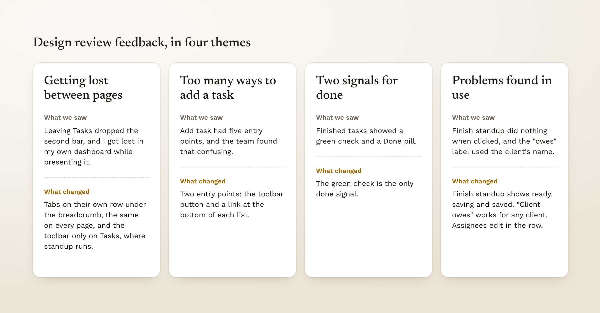
Fig 09. Feedback from the trial and the review, grouped into themes
I called getting lost in my own dashboard a red flag. In the final design the header is the same on every page: the breadcrumb, then the tabs on their own row, then the toolbar on Tasks. The toolbar follows Asana's pattern of views first and then the create action: List and Board, then Group and Filter, then Add task, then Search.
After the review, I stepped away from the design for a day and came back for one last pass. With fresh eyes I moved it closer to the conventions people know from GitHub, Jira and Linear. I cut most of the icons, lined everything up on one left edge, gave Timeline its own tab, renamed Meetings to Standup prep, and kept the standup controls on Tasks, where standup runs. Task titles now rename with a click, and the rows have more room.
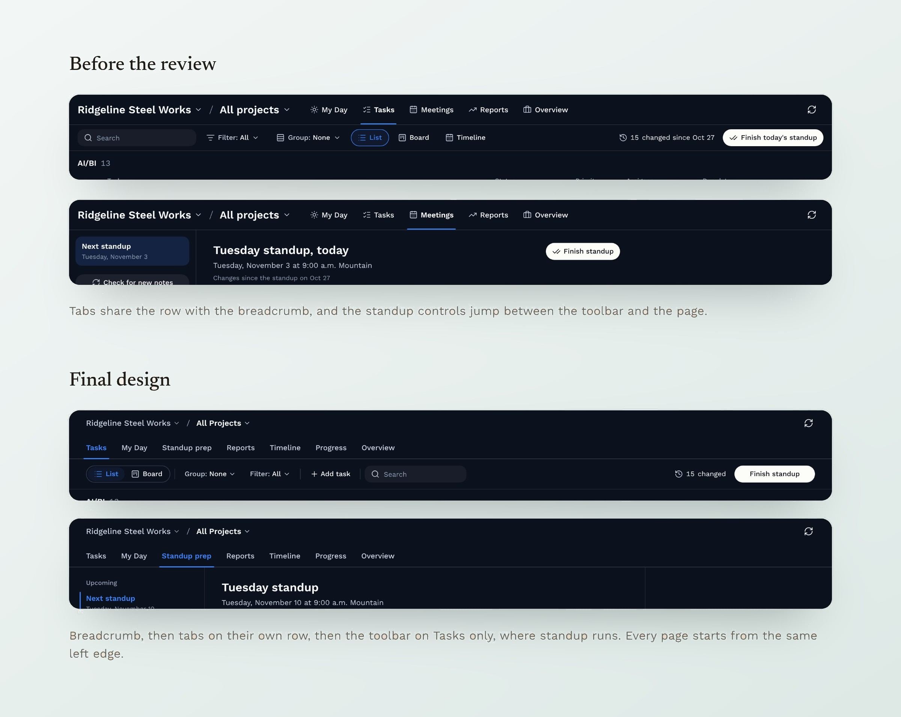
Fig 10. Navigation before the review and in the final design
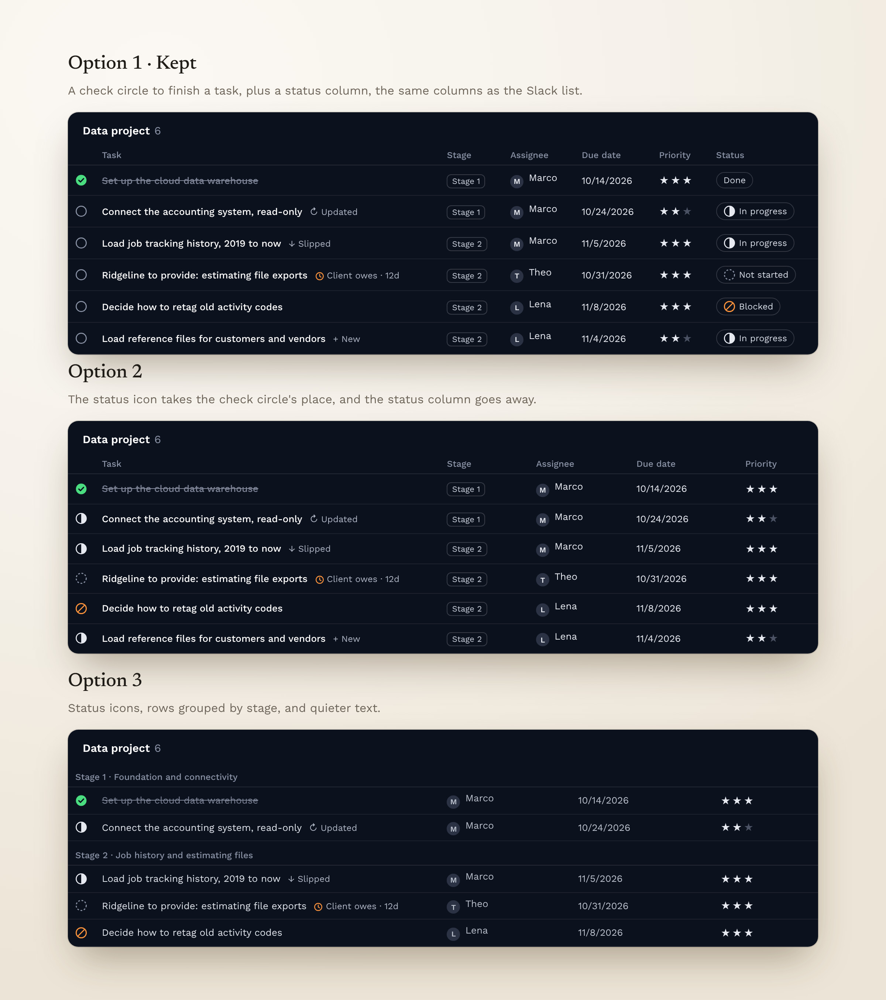
Fig 11. The three row styles shared with the team, recreated with sample data
| Decision | Options | What I chose | Why |
|---|---|---|---|
| Buy or build | Subscribe to Linear, ClickUp, Notion or Jira, or build our own | Build our own in Claude | Those tools did more than we needed, and our own build connects to the tools the team already uses without a new subscription |
| How to launch | Build it inside Cerino now, or as a standalone dashboard first | Standalone first | The team could test it and Stephen could approve the design before it moves into the product |
| Where the standup runs | A separate walk-through page, or the Tasks tab | The Tasks tab | One editable list was faster than a page that only showed tasks |
| Navigation | A second bar on every page, or a fixed header with the toolbar only on Tasks | A fixed header, with the toolbar only on Tasks | The header never moves, and the standup controls sit where standup runs |
| Adding tasks | An add button everywhere, or a few clear places | Two places | Five entry points confused the team |
| Saving Claude's drafts | Save automatically, or approve first | Approve first, with “Accept all suggestions” | Nothing saves without someone seeing it, and good suggestions take one click to accept |
With every status in gray, the task list was hard to scan, so the first version used a full palette of seven colors. Stephen reviewed it against Cerino's color rules, which keep the interface mostly monochrome and let words and icons carry meaning. I had added the colors because they make progress easy to see at a glance, and I said so. We agreed to try the simpler system first.
The final set uses four colors. Green means done, orange means something needs attention, red means archive or delete, and blue marks where you are. Blocked is the only status shown in color, which the team agreed on at the trial.
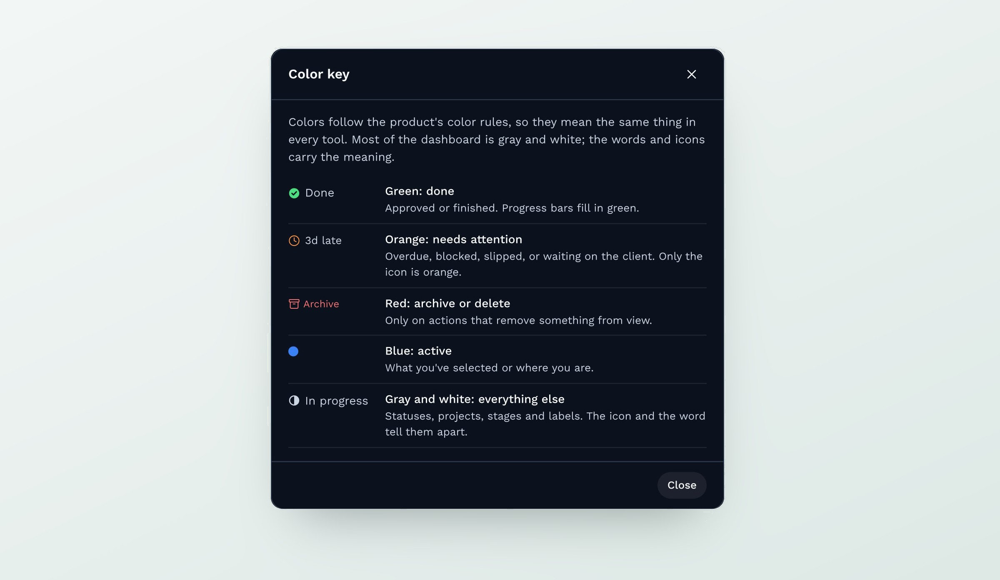
Fig 12. Status colors after the company color rules
The dashboard is now the standard template for client dashboards in Cerino, and Devendra approved extending my work to more project areas.
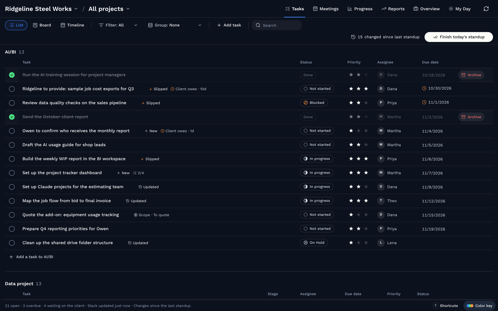
The current version shows where every task stands this week, but not whether the project is getting better or worse. Every Finish standup already saves a snapshot, so I used those snapshots to design a Progress tab for the next version. It's in the demo with the same sample data, and it answers four questions from standup. Will the data project finish by week 12? Which stages are behind? What does the client owe us, and for how long? And are overdue and slipped tasks going up or down?
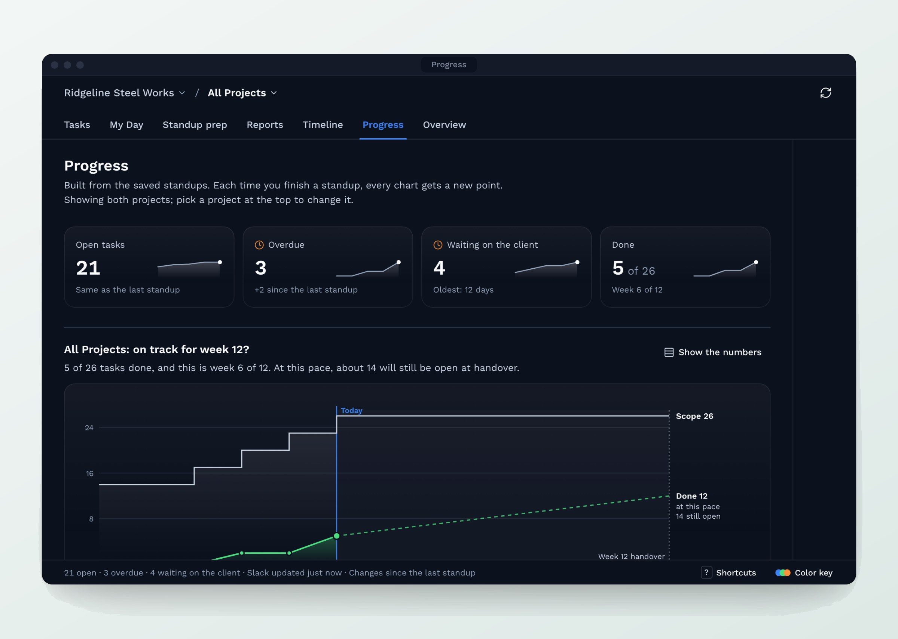
Fig 14. The Progress tab, planned for the next version
I picked a chart for each question. A burn-up chart shows scope and completed tasks since kickoff, with a dashed line that carries the current pace out to the week 12 handover. A bullet chart compares each stage's progress with where the plan expects it to be today. Horizontal bars show how many days each client item has been waiting, with a line at seven days, when we follow up. Two small column charts show overdue and slipped tasks at each standup. Every chart follows the same color rules and has a Show the numbers button that swaps it for a table, for screen readers and for anyone who prefers numbers.
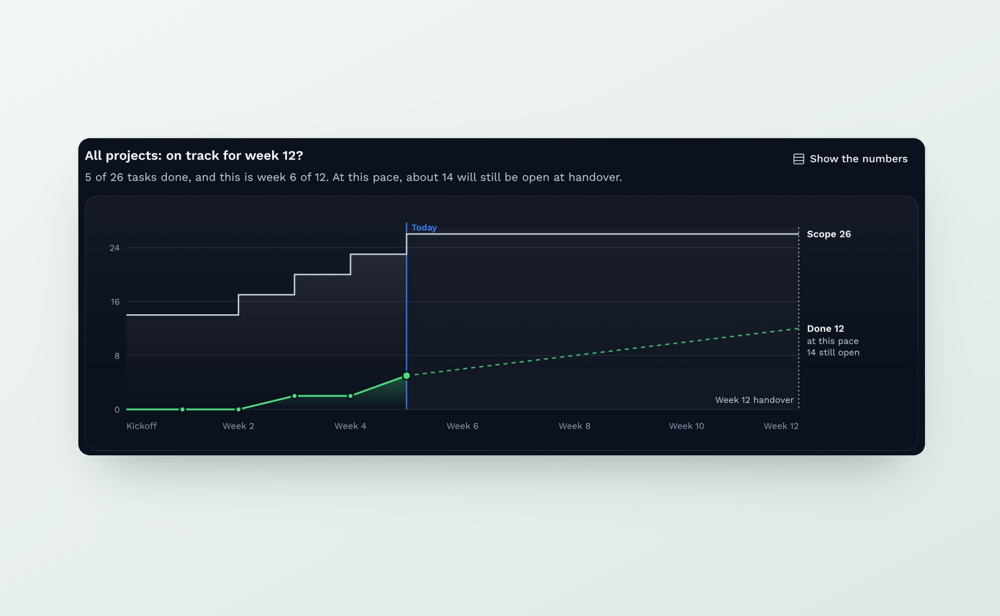
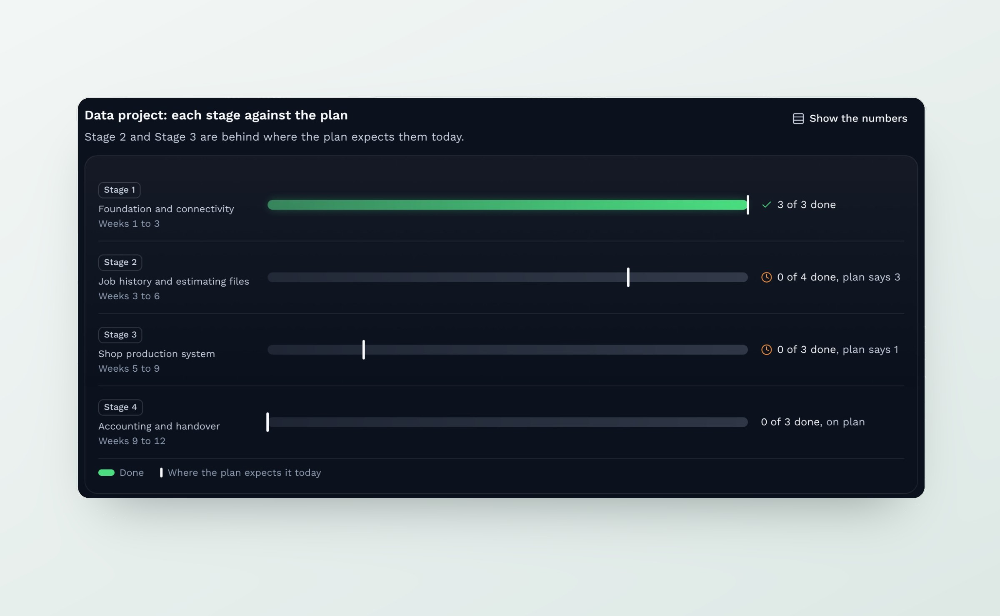
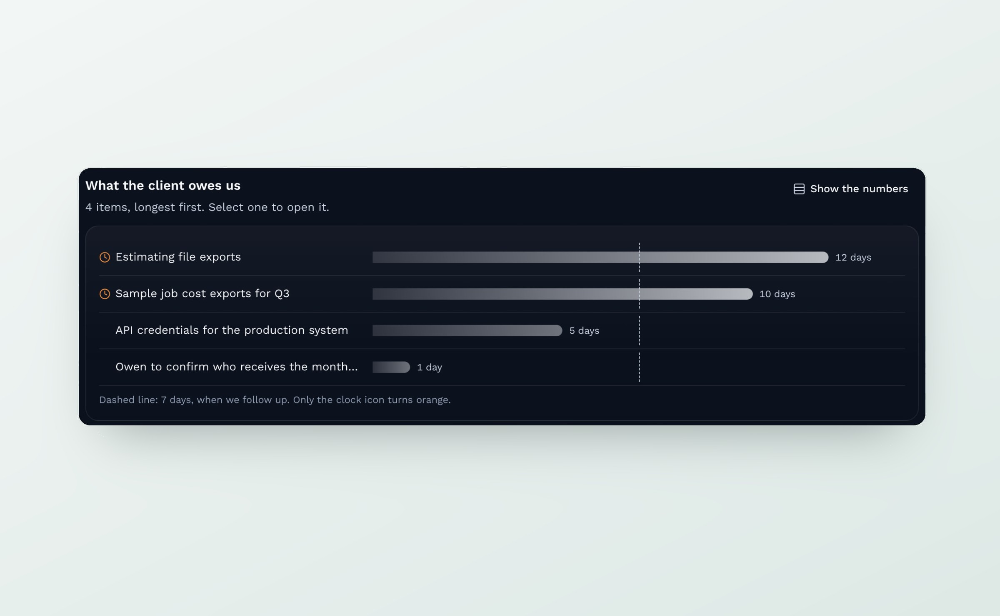
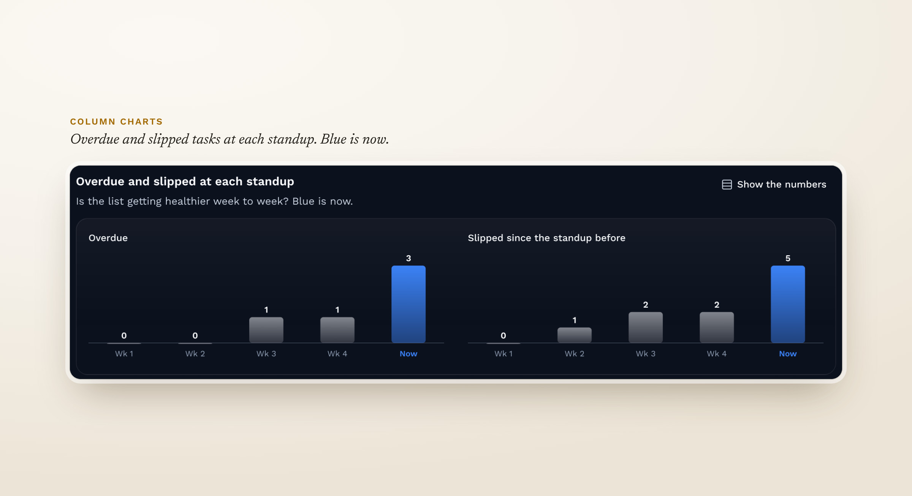
Fig 15. The charts up close. Tap the arrows to switch.
Next, I'll design for Cerino's screen sizes, about 1020px standard and 1640px expanded, and set shared rules for headers, subheaders, search and filters across tools. I also want a deeper competitive analysis. One known issue stays for now. A row moves to a new spot when its date changes, because Stephen prefers sorting by what's next up.
Starting from the three groups who would use the dashboard kept it to six tabs. Each one answers a question one of those groups asked.
Most of the important changes came from watching the team use it. Getting lost in my own navigation during the review was the clearest example. Taking a break before the final pass helped just as much, because I could see the design with fresh eyes.